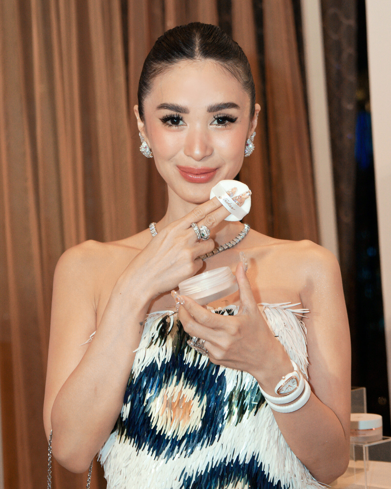
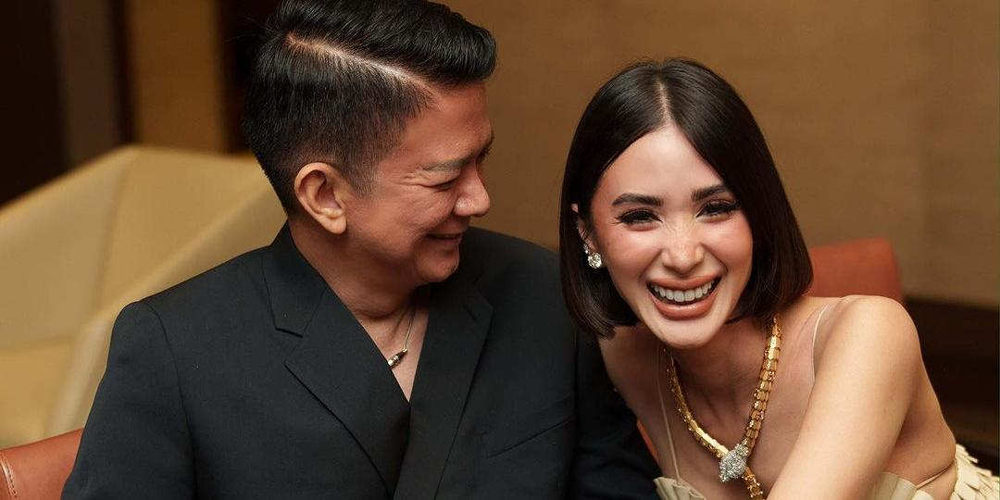

Love Marie Payawal Ongpauco-Escudero
(born February 14, 1985), known professionally as Heart Evangelista (Tagalog pronunciation: [ɛbɐŋhɛˈlistɐ], alternately [-vɐŋ-]), is a Filipino actress, model, painter and socialite. She is currently an exclusive artist of GMA Network and represented by Alice Talents Agency in Paris, France.
Heart Evangelista was born Love Marie Payawal Ongpauco on February 14, 1985, in Manila,[1] to Reynaldo Evangelista Ongpauco, a Filipino businessman, and Maria Cecilia del Gallego Payawal.[2] Evangelista is the youngest child in her family, with siblings from both sides of her parents. Her aunt is 1960s superstar Liberty Ilagan.[3] Evangelista's maternal great-grandfather is Don Juan del Gallego, a Spanish tradesman who founded the town of Del Gallego in Camarines Sur.[4] She was born in the Philippines and moved to the U.S. before returning to her homeland in her early teens. She started her career at age 13 as a model and actress.[5]
Evangelista is second cousin to actress Jodi Sta. Maria.[6]
Read More
Early life | Career
2000–2004
From 2000 to early 2004, she was paired with John Prats on the show G-mik, Trip, Ang Tanging Ina, My First Romance and Berks. During the success of their loveteam, they won as the (Most Popular Loveteams of RP movies) of 2003, from 33rd Guillermo Mendoza Memorial Scholarship Foundation. Evangelista also won the Best New Female Personality (Best New Movie Actress and Best New TV Actress) awards from Star Awards for Movies and Star Awards for TV. She also won Texter's and Listener's Choice at the Himig Handog Awards for her single "Love Has Come My Way". She released the single "Tell Me" in Australia where it peaked at number 18 on the charts.
2004–2007
In 2004, after four years, Prats and Evangelista's popular real and reel tandem ended and the management decided to pair her with Geoff Eigenmann in the movie Bcuz of U. Both of them also appeared on the TV series Hiram, with co-stars Kris Aquino, Dina Bonnevie and Anne Curtis for which she earned a Star Awards Best Actress nomination.
In 2005, Jericho Rosales once mentioned Heart's name, saying that he wanted her to be his leading lady in the series Panday. There were many women who auditioned for this role, but they chose Heart to play the role of Eden, the love interest of Tristan. Their tandem turned into a serious relationship and lasted 3 years.
In early 2007, she renewed her ties with ABS-CBN and was under a per project basis with her manager Angeli Pangilinan Valenciano. She finished a sineserye for the station, the remake of the movie Hiram na Mukha, and appeared briefly on Pangarap na Bituin. She also starred in the reformatted version of Your Song under the title "Muntik Na Kitang Minahal".[7][unreliable source?]
Read More

2008–present: Transfer to GMA Network
In early 2008, she signed a GMA Artist Center exclusive contract under GMA Network and started her first show Codename: Asero as the leading lady of Richard Gutierrez.
She played a role as one of the twins in the fantaserye Luna Mystika. Evangelista also appeared on her first afternoon TV soap Sine Novela: Ngayon at Kailanman which aired its final episode in September 2009. In late 2009 – early 2010, she starred in a primetime Koreanovela TV series, Full House. Evangelista was a regular host of the now-defunct musical variety show on GMA, Party Pilipinas.
She appeared in the Christmas reality show Puso ng Pasko: Artista Challenge on GMA Network, and she played a dwarf on Dwarfina. In late 2011, she signed an exclusive contract under Viva Entertainment.
In 2012, she starred alongside actresses Alessandra De Rossi and Lovi Poe in the TV series Legacy which became a highly acclaimed television series throughout its run. She also was included in the afternoon drama Forever opposite co-star Geoff Eigennmann. She then started her next project on Luna Blanca Book 3 onwards till its finale. The show is a sequel of her last soap Luna Mystika in 2008 of the same genre. In 2013, she was reunited with De Rossi in the Afternoon soap Magkano Ba ang Pag-ibig? under the direction of Maryo J. de los Reyes. In 2015, she and Legacy co-star Lovi Poe were reunited in the soap Beautiful Strangers, a melodrama. This was Evangelista's second time working with veteran actress Dina Bonnevie in a series with a huge ensemble cast. In 2016, she was reunited with Dwarfina co-star Dennis Trillo in the primetime rom-com Juan Happy Love Story.[7] In September 2016, Evangelista experienced a series of depression after the passing of her mentor and 'close friend', former senator Miriam Defensor Santiago.[8]
In 2017, Evangelista starred in Mulawin vs. Ravena. She also starred in My Korean Jagiya, paired with former U-KISS member Alexander Lee. The show aired with a total of 105 episodes.[9]
In 2019, she served as a judge on the seventh season of the reality talent television show StarStruck.[10] Evangelista then portrayed a Sorsogon fashion designer and socialite Celeste in the television drama romance series I Left My Heart in Sorsogon (2021–2022).[11]. She also appeared in the series Bling Empire.
Read More